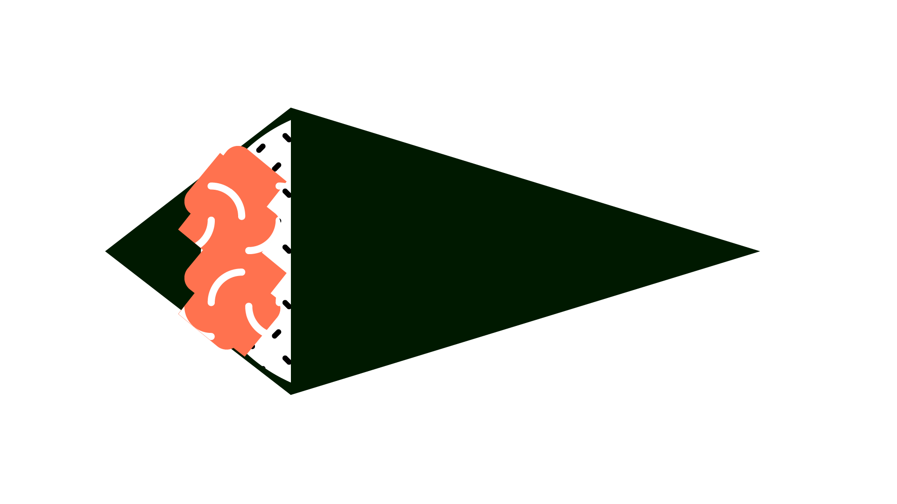
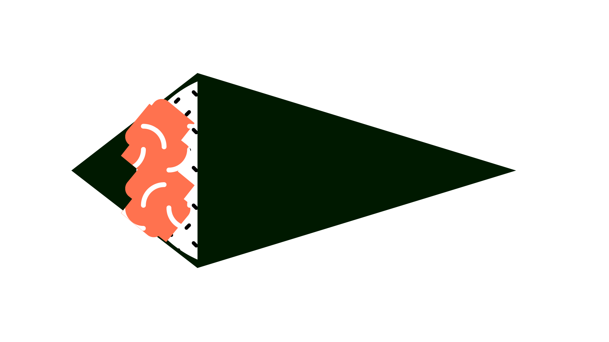
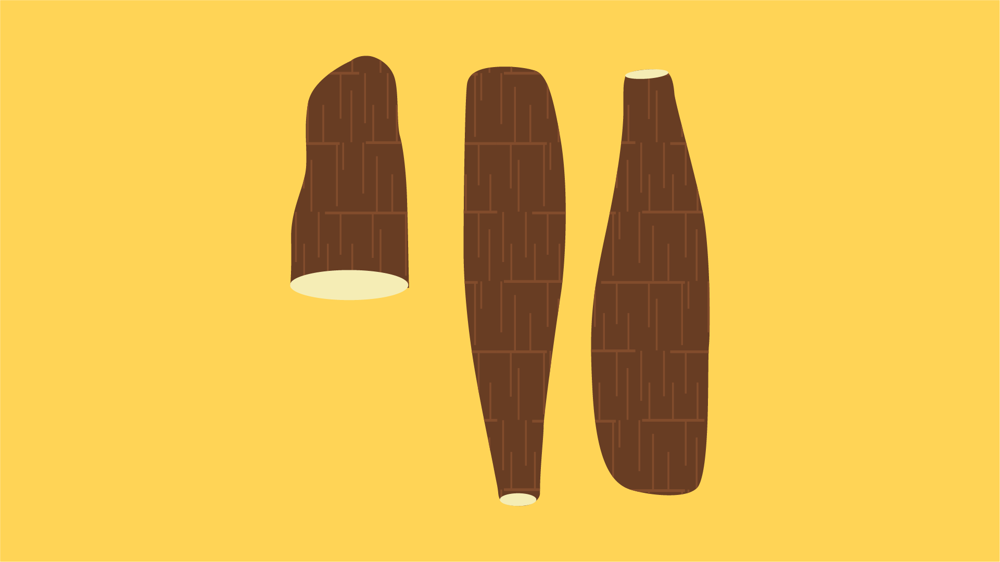
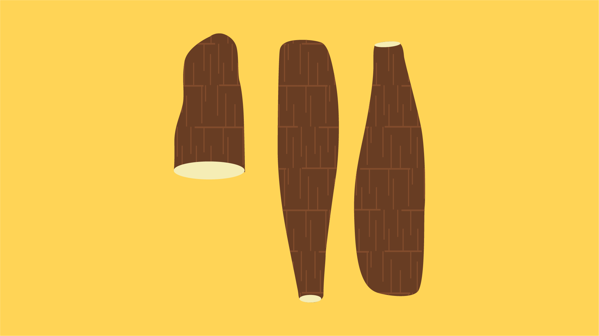

it's per kilo – foods that explain brazil
nexo jornal — 2019-2020
"It's per kilo – foods that explain Brazil" is a series of explanatory videos that, starting from a food, deal with a specific theme of Brazilian society and culture. It starts from the premise that food is political — and is heavily influenced by the country's economy, migration, religion and history.
visual identity
A visual identity was created for the series, which was flexible and adapted to all themes. The main elements of the identity are the orange and yellow base colors — and the large colored texts in different weights, composed in Titling Gothic typography.


Screens with the project's marks, present in all episodes
For each food, animated patterns were designed, in order to occupy the screen moments while maintaining the movement in the video. The patterns also make up the illustrations that accompany each episode.


Set of screens representing each food, designed for the teaser video
temaki
The first episode of the series starts from temaki to explain the wide spread of "temakerias" in the country and its relationship with the rise of a consumer middle class.

 


Illustrations for the episode about temaki


Screen templates for inserting videos, with animated texture in the background
farofa
The second episode of the series dissects farofa and its relationship to the origins of Brazilian society — the role of cassava in indigenous food and flour production, and the introduction of corn into Brazilian food.
 

Ilustrações para o episódio sobre a farofa


Screen templates for inserting videos, with animated texture in the background
videos
Four episodes of the series were produced: temaki, farofa, caipirinha and acarajé — in addition to a teaser video. The series was interrupted due to the covid-19 pandemic, which made filming on location impossible.
This project was developed using Adobe Illustrator and Visual Studio Code, together with Sariana Fernández and directed by Guilherme Falcão